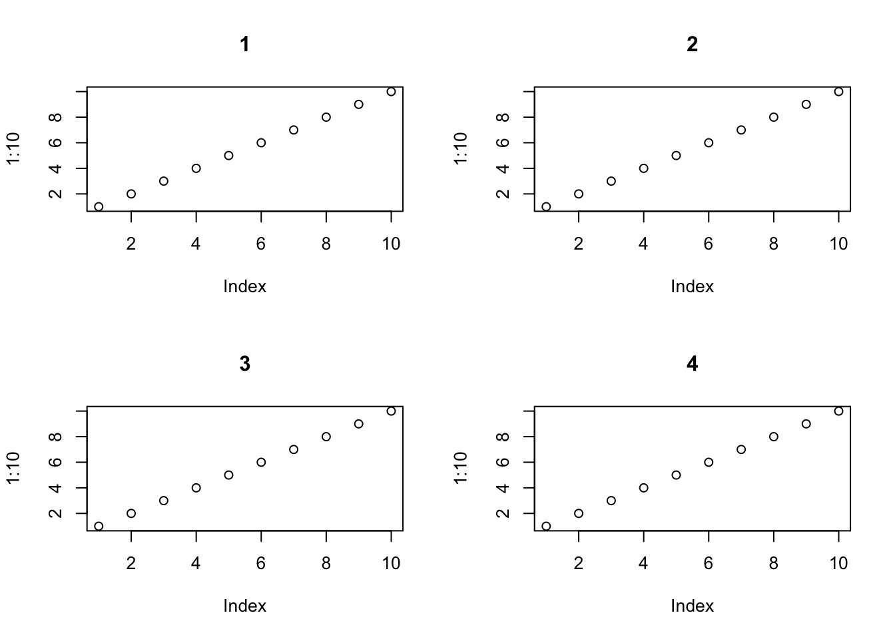
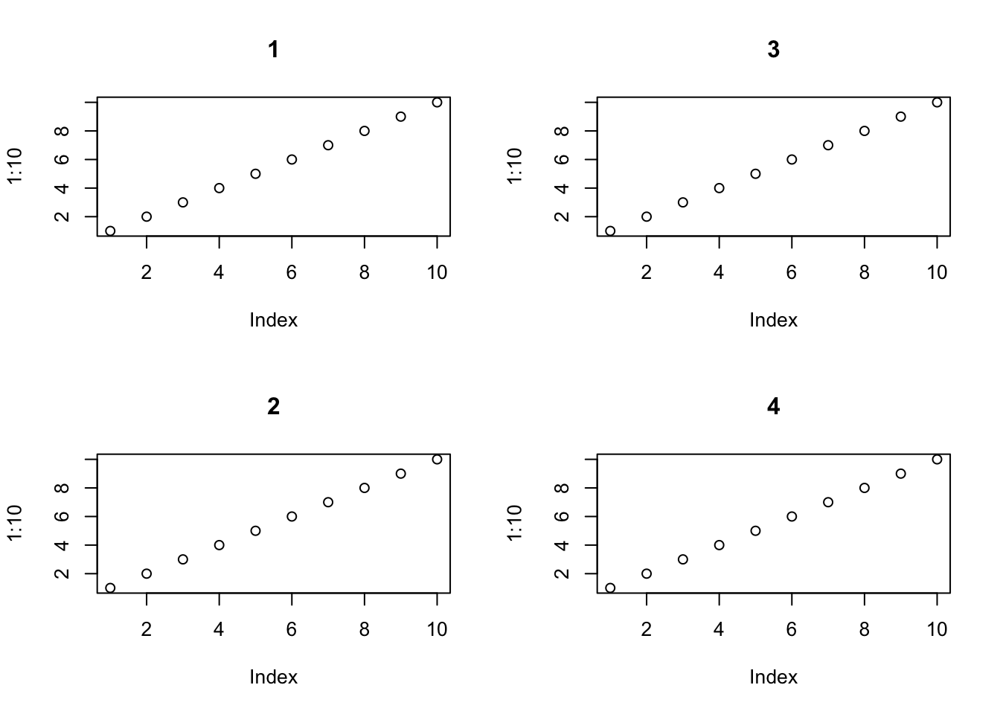
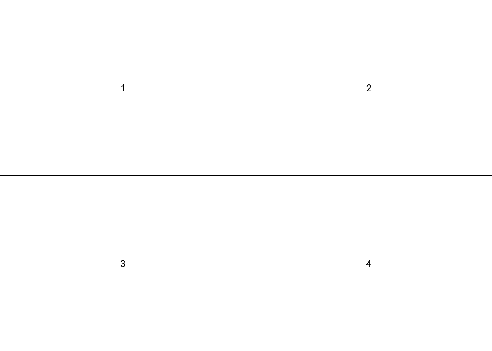
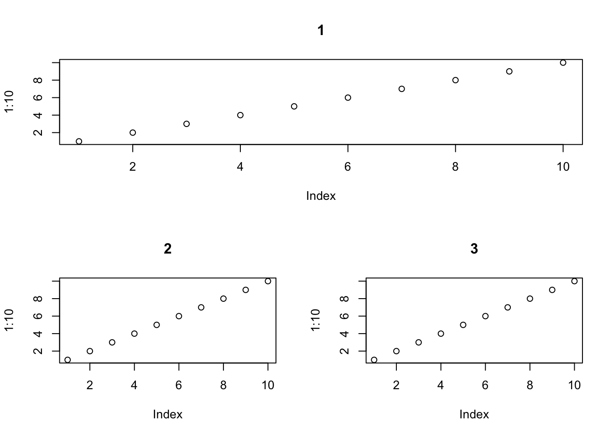
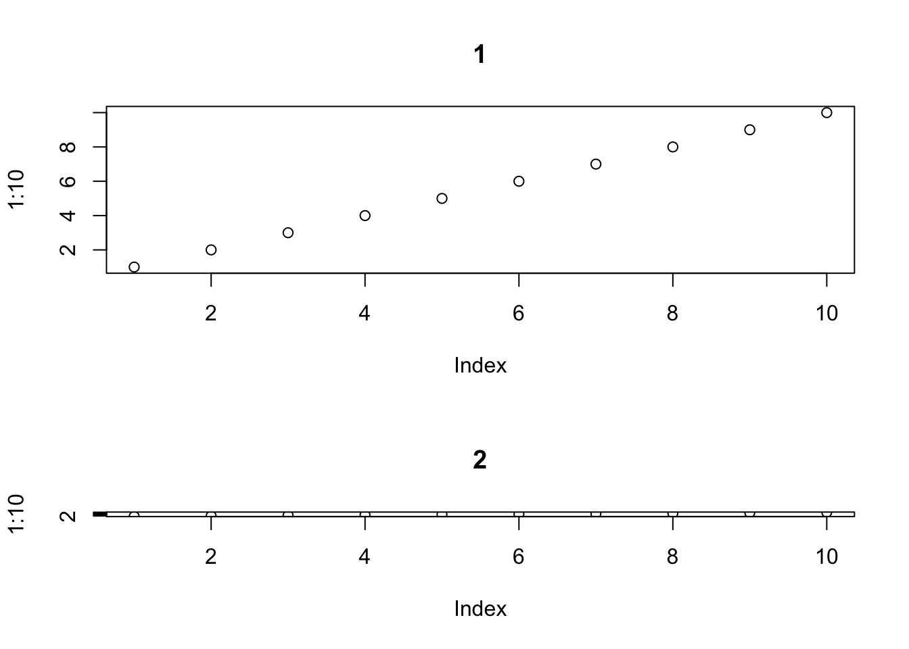
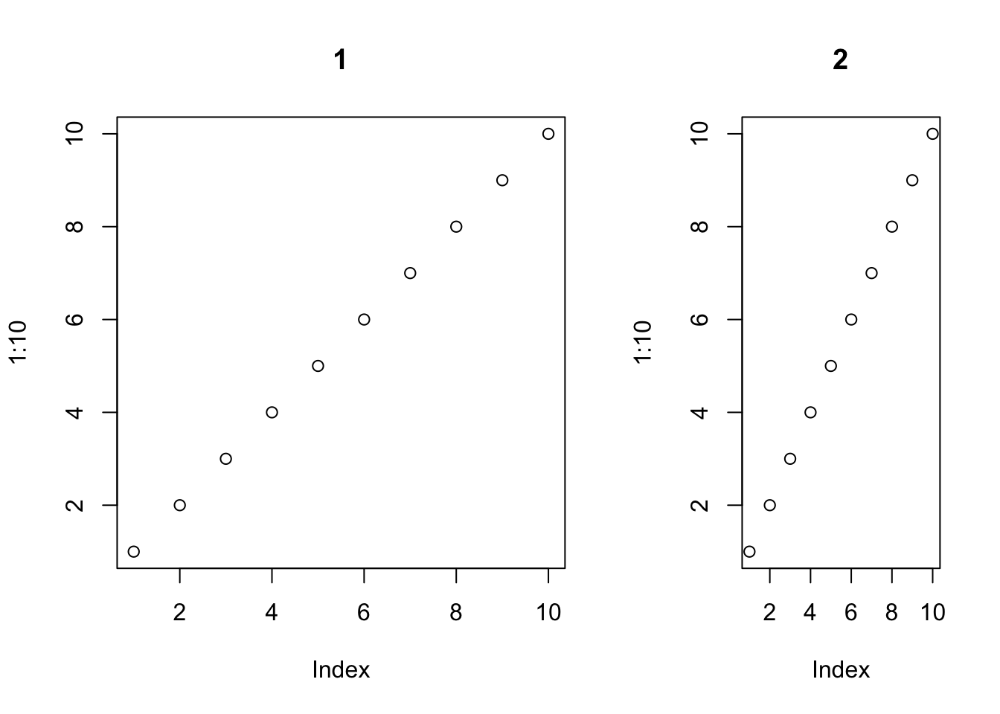
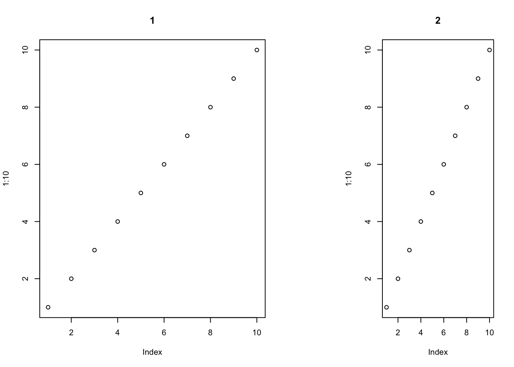
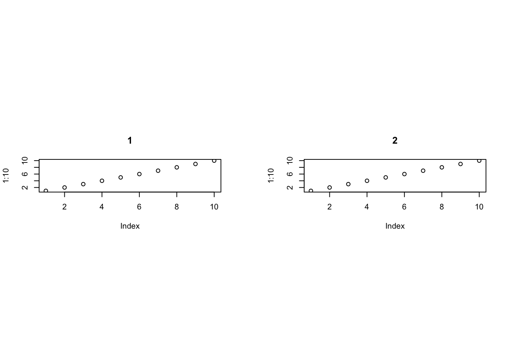
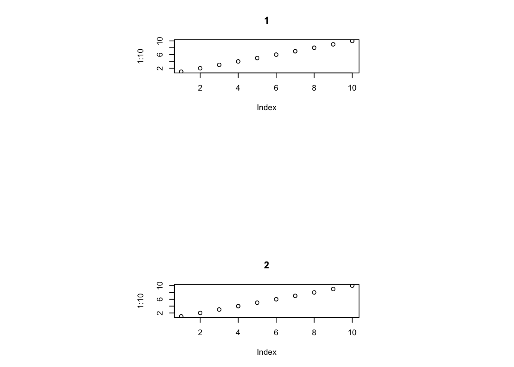

R传统图形绘制多图
王诗翔 · 2019-06-21
分类:
r
标签:
r
installation
base-plot
multiple-plots
plot
我这里只说 2 种常用方式，它们互相排斥：
- 使用
par()函数设定mfrow或者mfcol进行控制。 - 使用
layout()函数。
par() 函数
mfrow 和 mfcol 都由 2 个数字指定，一个表示行数、一个表示列数。如果使用 mfrow，那么图像区域会被按行依次使用；
如果使用 mfcol，那么图像区域会按列依次使用。
下面进行测试：
par(mfrow=c(2,2))
plot(1:10, main = "1")
plot(1:10, main = "2")
plot(1:10, main = "3")
plot(1:10, main = "4")
par(mfcol=c(2,2))
plot(1:10, main = "1")
plot(1:10, main = "2")
plot(1:10, main = "3")
plot(1:10, main = "4")
这区别应该一目了然吧？
布局函数 layout()
上面的方法创建的子图大小是相同的，而 layout() 就要高级不少。
layout() 将图片内部区域分割为一组行和列，但行高和列宽度可以分别控制，并且每个子图可以占据超过一行或一列的位置。
layout() 用矩阵作为参数来表示上述的思想，矩阵的值就是子图的序号。如果某子图序号多次出现，那么该子图就会占据多个区域。
layout(matrix(1:4, byrow=TRUE, ncol=2))
layout.show(4)
实现上一种方法的效果很简单：
layout(matrix(1:4, byrow=TRUE, ncol=2))
plot(1:10, main = "1")
plot(1:10, main = "2")
plot(1:10, main = "3")
plot(1:10, main = "4")layout(matrix(1:4, byrow=FALSE, ncol=2))
plot(1:10, main = "1")
plot(1:10, main = "2")
plot(1:10, main = "3")
plot(1:10, main = "4")
再看下不等宽的情况：
layout(matrix(c(1, 1:3), byrow=TRUE, ncol=2))
plot(1:10, main = "1")
plot(1:10, main = "2")
plot(1:10, main = "3")
巧妙地设定矩阵，就可以自由实现多种组图方式了。不过显然到这里，还感觉差一些东西：默认情况下，所有的行高和列宽尺寸都是相同的， 而且内部也是以这种方式分割。怎么实现自定义的行高或列宽？
这需要设定 heights 和 widths 2 个选项。
layout(matrix(c(1:2)), heights = c(5, 3))
plot(1:10, main = "1")
plot(1:10, main = "2")
这里 heights 设定的是一个相对占比，比如子图 1 占 5/(5+3)。同样的操作可以应用到 widths 上。
layout(matrix(c(1:2), ncol = 2), widths = c(5, 3))
plot(1:10, main = "1")
plot(1:10, main = "2")
0 可以用来进行占位，给图形留出更多的空间。
layout(matrix(c(1,0,2), ncol = 3), widths = c(5, 1, 3))
plot(1:10, main = "1")
plot(1:10, main = "2")
上述的数字设定都是相对的，使用选项 respect=TRUE 我们可以将它们映射到物理距离上。
layout(matrix(c(1,0,2), ncol = 3), widths = c(2, 0.2, 2), respect = TRUE)
plot(1:10, main = "1")
plot(1:10, main = "2")
我们也可以使用 lcm() 对某个图形进行厘米大小的设定，如上面的空隙大小。
layout(matrix(c(1,0,2), ncol = 1), widths = c(2, lcm(0.2), 1), respect = TRUE)
plot(1:10, main = "1")
plot(1:10, main = "2")
更多的操作查看文档啦~ 这里其实只要知道 layout() 函数，以及通过矩阵设定子图排列的思想使用起来就简单的。
更复杂的操作就要学习 grid 了，可能未来的某天我会学习并写写。
资料：《R绘图系统》（第二版）